Page 2
Continued from Page 1


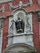
School lies close to the cloister, to the W, i.e. S of Hall. It was built in 1683-7. The cost was �2,600, of which Warden Nicholas gave more than half. It is 80 by 36 ft. in size. The attribution to Wren has no authority. Red brick and much stone. Seven bays, the central three projecting and pedimented. Carved modillions; hipped roof. Quoins. The windows are arched with straight hoods on brackets. Very fine garlands above them. In the three middle bays they have heads in their centres. Large doorway with segmental pediment on brackets. Above, a niche with volutes and an arched hood enriched with a foliage frieze. In the niche statue of the founder by C.G. Cibber; 1692.

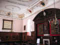

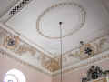

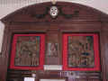
The ceiling starts with a broad coving. In this shells, branches, palm-fronds, and shields. The ceiling proper has two simple oval panels and one thickly garlanded round panel. Facing the entrance two-bay panelling with a broad segmental pediment. ... Tapestries. Flemish, one later C15, the other later C16.

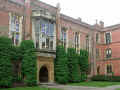

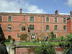

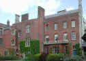
South of the Headmaster's House (picture on right) and west of the Hall are Moberly Court and Flint Court (below). They are by Butterfield, 1867-70, a remodelling of Repton's job of 1837-9 and, probably for that reason, not as eventful as Butterfield's work at Rugby and Keble. They are brick, partly chequer, partly diaper. To the N the front is of nine bays and symmetrical. The centre is an archway and a big canted bay over. The first and last bays are higher than the rest. The W range is more utilitarian and three-storeyed throughout.

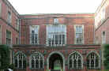

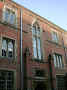

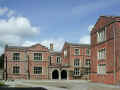
The S side of the main range, i.e. Flint Court, is more or less symmetrical. It has two projecting wings, and in the centre a Perp cloister of three-light windows lies in front of the range proper. The W wing was later extended S. ...

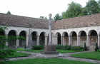

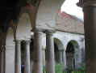

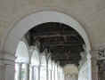

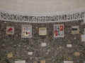
Extensions from 1890 have been to the S. In topographical order the first is Sir Herbert Baker's War Memorial Cloister of 1922-4. It is one of his best buildings. Flint and stone blocks. To the outside the walls are closed as those of an ancient cloister. ... Inside, the cloister is of Tuscan columns, two deep, carrying arches. Against the walls a long inscription in flushwork and many shields and emblems by G. Kruger Gray. Baker liked this sort of thing. In the centre a Cross on shaft by Alfred Turner.

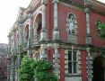

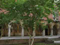

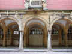

S of this is Basil Champney's Memorial Buildings, principally museum and art school, dated 1898, a curiously Baroque building. Brick and Bath stone. The front is of nine bays, with bays one and nine solid and with columns and window surrounds of heavy stone blocking. The centre has on the ground floor a recessed loggia with Tuscan columns two deep (Baker may have got his inspiration from this) and above them big oriels and Baroque roundels between ... In the solid bays statues of the founder and Queen Victoria. To the N, lying back, a broad tower with Baroque cartouches. To the S on the upper floor three convexly projecting balconies. ...

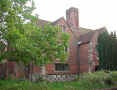

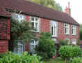
The Sick House, a building put up at a suitable distance from the rest in 1656. Brick, two gables and a smaller gable for the projecting middle porch. Mullioned windows.

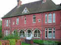

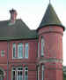

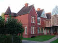

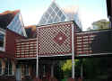

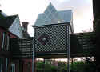
The Sanatorium (now the art school) S of the Sick House is of 1884-93, a late work of W. White. The 'shadows' in the design in the last two pictures represent the shadows at 6 pm and 12 noon respectively.

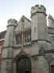
Further away from the other buildings is the Commoner Gate (South Africa Memorial) to Kingsgate Street. Stone, with polygonal turrets, in an ornate Perp, by Frank L. Pearson, 1902-4. ...